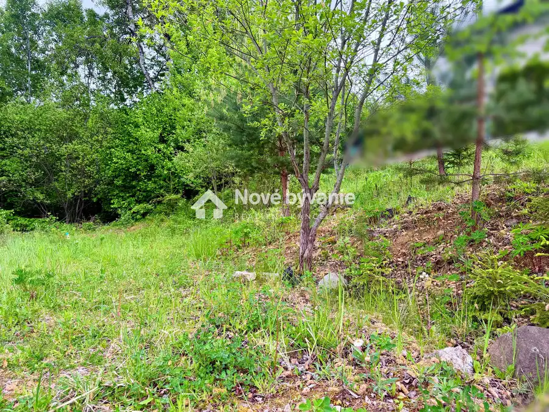
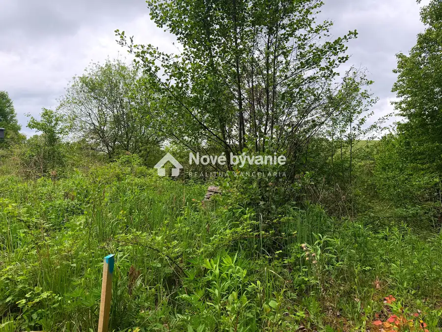
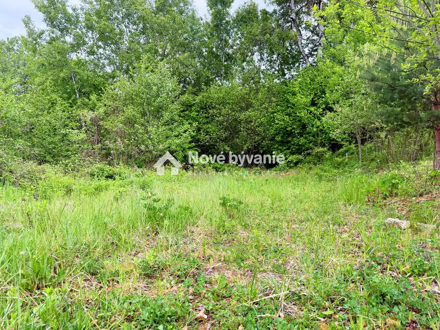
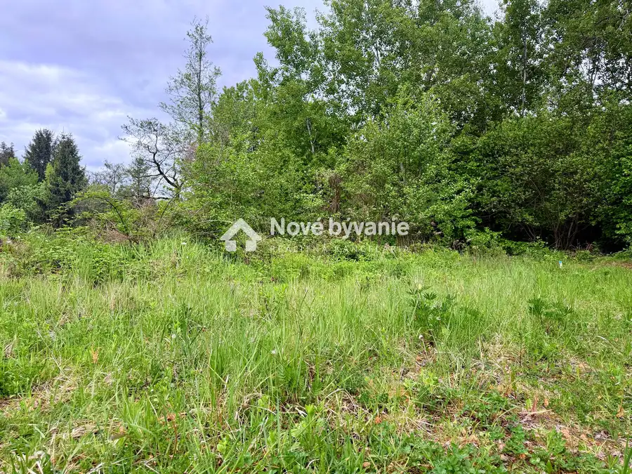
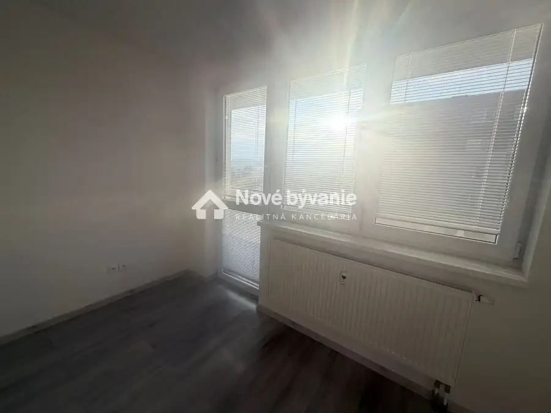
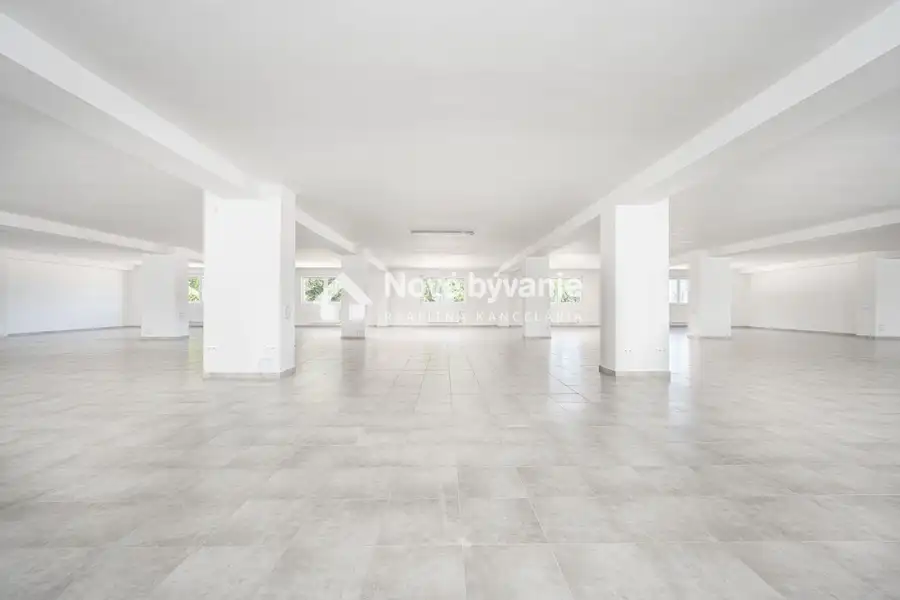
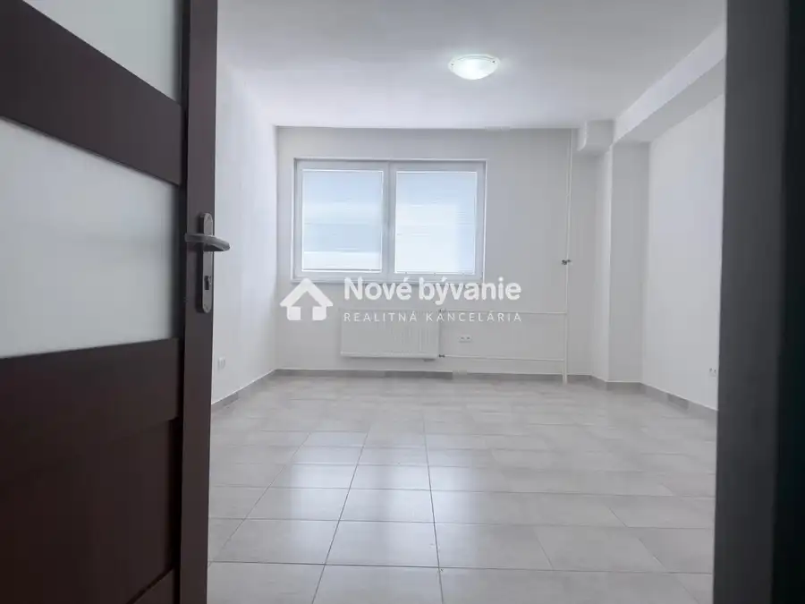

Predaj: stavebný pozemok PB (N096-14-DASEa)
Považská Bystrica




- Plocha1050 m²
- VlastníctvoOsobné
O nehnuteľnosti
(N096-14-DASEa)Ponúkame na predaj stavebný pozemok s celkovou výmerou 1 050 m², situovaný v katastrálnom území Považská Bystrica - Čierne Háje. Pozemok je podľa územnoplánovacej informácie určený na výstavbu samostatne stojaceho rodinného domu. Nesporným benefitom nehnuteľnosti je oficiálne potvrdená regulácia, ktorá umožňuje realizáciu 2 nadzemných podlaží a obytného podkrovia, vďaka čomu pozemok uspokojí aj nároky na priestranné rodinné či viacgeneračné bývanie.Pozemok je mierne svahovitý a aktuálne sa predáva v pôvodnom stave.Pre nového majiteľa predstavuje príležitosť na: individuálne modelovanie terénu: možnosť vytvorenia moderných kaskád, terás alebo umiestnenia oporných múrov presne podľa architektonického projektu domu, okamžité prírodné súkromie: selektívnym výrubom je možné ponechať časť zdravých vzrastlých stromov, ktoré vizuálne oddelia pozemok od susedov ihneď po dokončení stavby.Priamo na pozemku sa nachádza schválené uloženie verejného vodovodu (podľa GP č. 03/2013 s ochranným pásmom 1,5 m na obidve strany od potrubia, ošetrené zákonným vecným bremenom v prospech Považskej vodárenskej spoločnosti, a.s.).Elektrická energia: V priamom dosahu.Pozemok nie je napojený na plynovodnú sieť (ideálna technická pripravenosť pre moderné bezemisné technológie ako tepelné čerpadlo v kombinácii s fotovoltikou).Dokumentácia k dispozícii:K pozemku je pripravená kompletná zložka pre právne a projekčné účely, polohopisné a výškopisné zameranie od certifikovaného geodeta a zákresy sietí s vyjadrením správcov. V prípade záujmu alebo doplňujúcich otázok alebo dohodnutie obhliadky ma neváhajte kontaktovať!Sekerková Daniela Realitný maklér Nové Bývanie Reality Tel.: +421 907 664 154Email: sekerkova@novebyvaniereality.skV cene je zahrnutý právny a finančný servis vrátane poplatkov za vyhotovenie zmlúv a úhrady kolkov pri prevode vlastníctva.
Parametre
- Druh
- Pozemok pre rodinné domy
- Dátum zverejnenia
- 15. 05. 2026
- Plocha pozemku
- 1050 m²
- Typ
- Predaj
- Vlastníctvo
- Osobné
Kde to je


Mohlo by Vás zaujímať

BytNové 194 000 €Predaj 2 i. byt, Trenčín (N074-112-DASEa) Trenčín 2-izbový56 m²4. podlažie
Komerčné priestoryNové Cena na vyžádáníKancelária , prenájom Považská Bystrica Považská Bystrica 920 m²
Komerčné priestoryNové Cena na vyžádáníPrenájom: kancelária / prevádzkový priestor - (N106-26-DASE) Považská Bystrica 27 m²